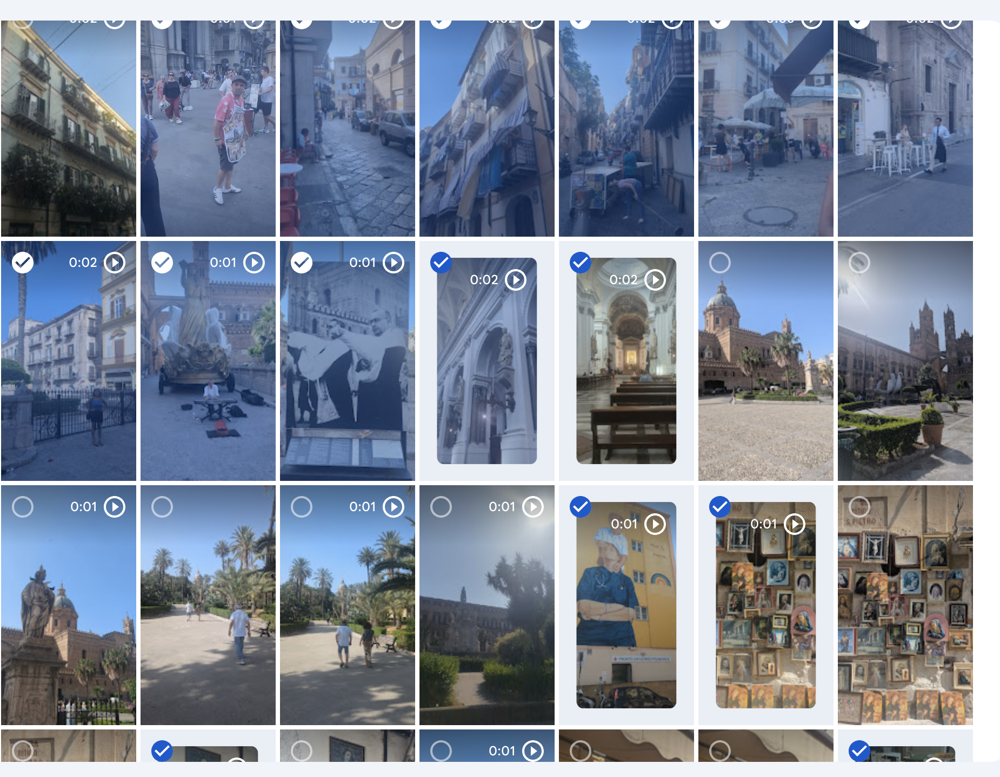

I've made a few one-minute travel videos by hand, influenced by samyoukilis on Instagram. The process is always the same: cut each clip down to about a second, then splice them together. It takes ages. So I wanted to see if AI could do the boring bit, using Jev.
Jev is a new model from TypeSafe AI. It's not a chatbot and it doesn't write anything back. You give it a narrow question with fixed answers and it picks one, with a probability attached. That's why it's meant to be quick: the company claims 40 to 200 times faster than the big LLMs. Fast decisions felt like a good fit for 120 clips.
Working in Claude in the terminal, with FFmpeg doing the cutting, I set a few rules: drop anything repetitive, keep it in order so it reads like a journey, and find the best second of each shot. The first round came out, but the cuts were off. It wasn't finding the middle of the clip. The second try got the timing right but cut out so much it was only a small clip in the end. One more go, then I gave up.
So what I thought would be a quick test of Jev turned into something else. The decisions were fast. The editing wasn't. Small video edits with AI need more time than I gave it. I'll be back.